S41 — कांच के पार सब कुछ कैसे दिखता है?
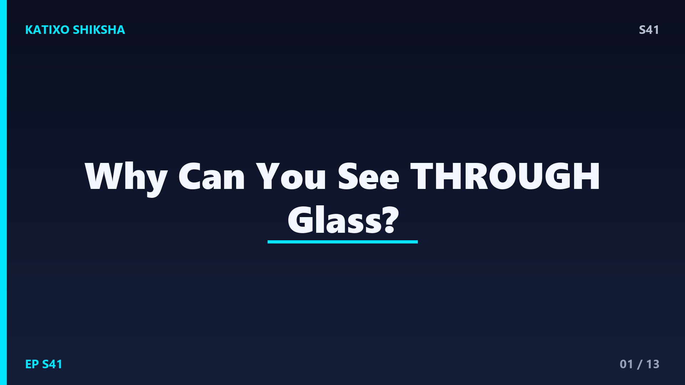
Slide 1दोस्तों, ज़रा सोचो — तुम्हारे सामने एक लकड़ी का दरवाज़ा है, उसके पार कुछ नहीं दिखता। लेकिन एक कांच की खिड़की है, और उसके पार पूरी दुनिया साफ़ दिखती है! दोनों ठोस चीज़ें हैं, फिर कांच transparent क्यों है और लकड़ी नहीं? यह सवाल जितना आसान लगता है, इसका जवाब उतना ही mind-blowing है — इसमें atoms, electrons और light की energy सब छुपे हैं। आज Katixo Shiksha पर हम इसी रहस्य को खोलेंगे। चलो शुरू करते हैं!
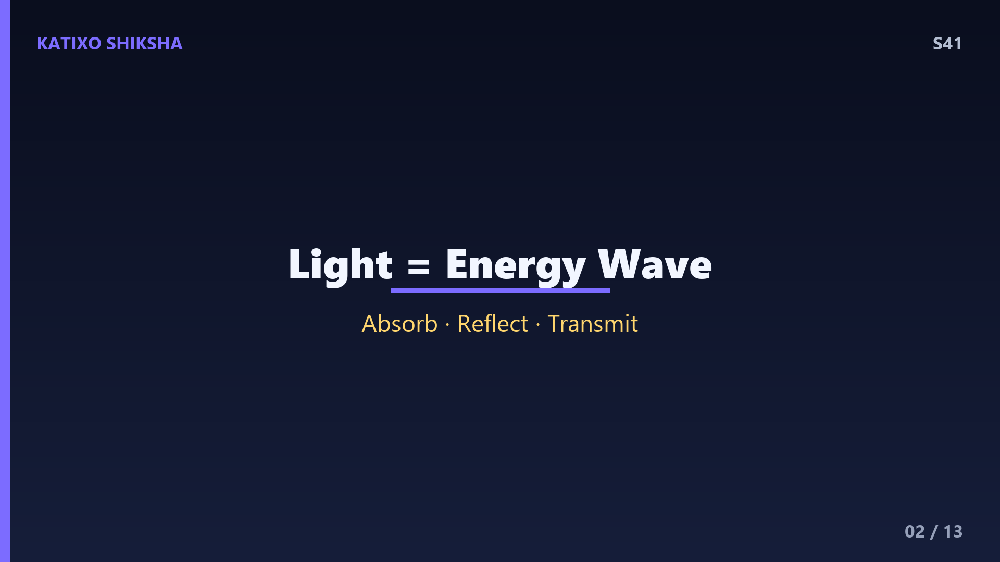
Slide 2सबसे पहले समझो light क्या है। Light एक तरह की electromagnetic wave है जो energy ले जाती है। जिस light को हम देख पाते हैं उसे visible light कहते हैं, और इसकी wavelength लगभग 380 से 700 nanometre तक होती है। हर रंग की अलग energy होती है — violet की सबसे ज़्यादा, red की सबसे कम। जब light किसी चीज़ से टकराती है, तो तीन में से एक बात होती है — या तो light absorb हो जाती है, या reflect हो जाती है, या उसके पार निकल जाती है यानी transmit होती है। कांच के पार देखना इसी transmit होने का खेल है।
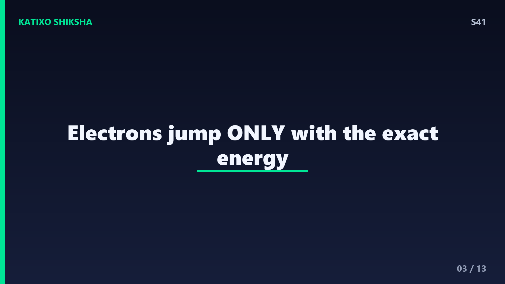
Slide 3अब असली सवाल — light किसी material के अंदर absorb क्यों होती है? हर material atoms से बनी है, और हर atom में electrons होते हैं जो अलग-अलग energy levels में बैठे रहते हैं, जैसे सीढ़ी की अलग-अलग पायदान। एक electron तभी ऊपर वाली पायदान पर कूद सकता है जब उसे बिल्कुल सही मात्रा में energy मिले। जब आती हुई light की energy एक electron को ऊपर कूदने के लिए perfect match होती है, तो electron वो light absorb कर लेता है। यानी light रुक जाती है, पार नहीं जाती। यही असली switch है transparent और opaque के बीच।
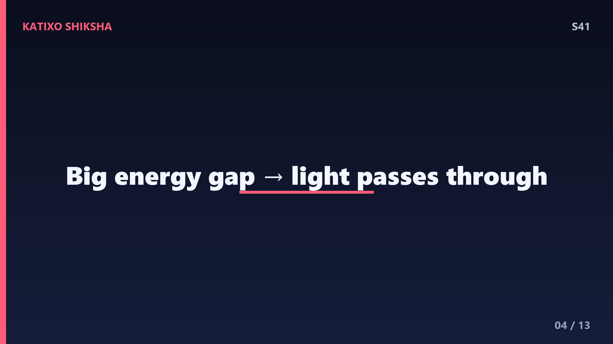
Slide 4अब कांच का राज़ समझो। कांच ज़्यादातर silicon dioxide यानी रेत से बनता है, और इसके electrons की energy levels के बीच बहुत बड़ा gap होता है। इस gap को पार करने के लिए electron को इतनी energy चाहिए जो visible light में होती ही नहीं! इसका मतलब — visible light कांच के electrons को कूदा नहीं सकती, इसलिए कोई electron उसे absorb नहीं करता। Light बेरोक-टोक कांच के पार निकल जाती है। यही वजह है कि कांच हमें transparent दिखता है — light का रास्ता खाली रहता है।
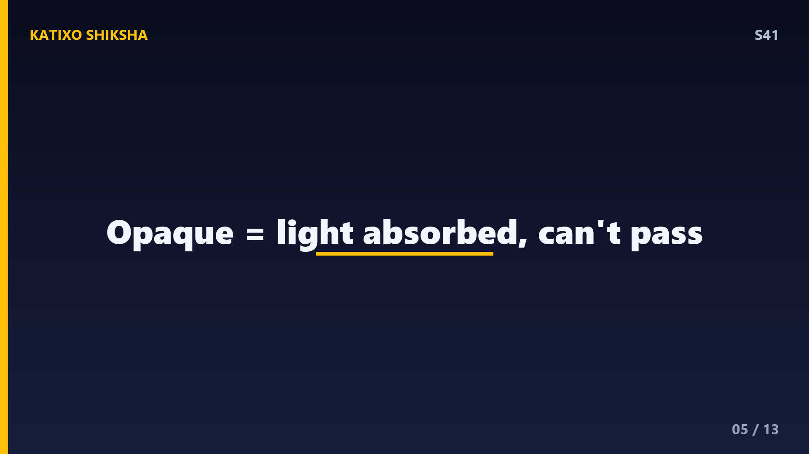
Slide 5तो फिर लकड़ी और दीवार के पार क्यों नहीं दिखता? क्योंकि इन materials में electrons की energy levels visible light की energy से perfectly match कर जाती हैं। जैसे ही light टकराती है, electrons उसे झट से absorb कर लेते हैं और light heat में बदल जाती है। कुछ light तो वापस reflect हो जाती है, इसीलिए हमें लकड़ी का रंग दिखता है। लेकिन light पार नहीं जा पाती, इसलिए हम दूसरी तरफ नहीं देख सकते। इन्हें हम opaque कहते हैं — यानी जिनके पार light नहीं जा सकती।
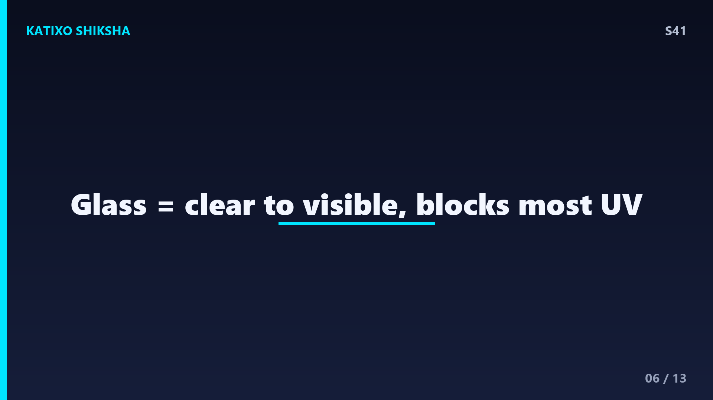
Slide 6एक मज़ेदार बात — कांच सिर्फ़ visible light के लिए transparent है, हर तरह की light के लिए नहीं! Ultraviolet यानी UV light, जो धूप में होती है, साधारण कांच उसे काफ़ी हद तक रोक देता है। इसीलिए कार के बंद शीशे के पीछे बैठकर भी तुम्हें UV से कम tan होता है। वहीं infrared light, यानी heat radiation, कांच से कुछ हद तक निकल जाती है। मतलब transparent होना absolute नहीं है — यह इस बात पर depend करता है कि किस light की कितनी energy है।
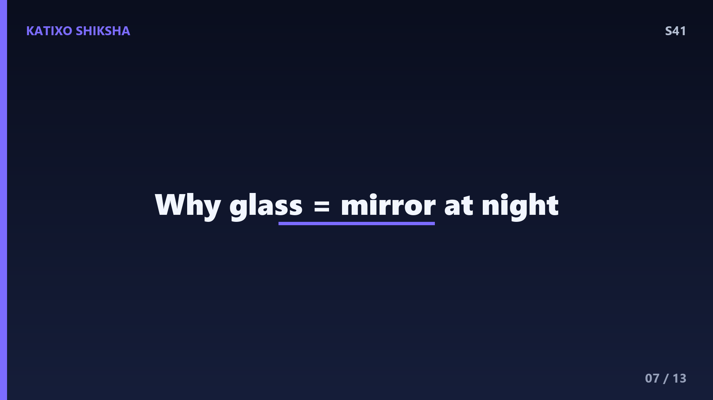
Slide 7अब सोचो — कांच transparent है, फिर भी कभी-कभी उसमें हमारा reflection क्यों दिखता है? क्योंकि जब light एक medium से दूसरे medium में जाती है, जैसे हवा से कांच में, तो उसकी speed बदल जाती है। इस बदलाव की वजह से थोड़ी सी light हर surface पर reflect हो जाती है — लगभग 4 percent। दिन में बाहर की तेज़ रोशनी इस reflection को छुपा देती है। लेकिन रात में जब बाहर अंधेरा होता है और अंदर रोशनी, तब वही 4 percent reflection साफ़ दिखने लगता है — और कांच आईने जैसा लगता है।
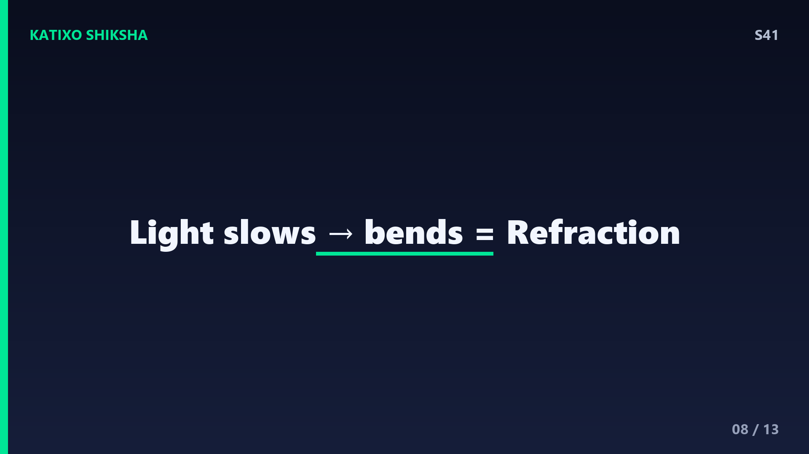
Slide 8Speed बदलने की यही बात एक और कमाल करती है — bending यानी refraction. हवा में light करीब 3 लाख किलोमीटर प्रति सेकंड चलती है, लेकिन कांच के अंदर यह slow होकर लगभग 2 लाख किलोमीटर प्रति सेकंड रह जाती है। जब light तिरछी कांच में घुसती है तो यह speed change उसे मोड़ देता है। यही refraction चश्मे, camera lens और microscope का दिल है। तो कांच सिर्फ़ देखने नहीं देता, बल्कि light को control करके हमें दूर और छोटी चीज़ें भी दिखा देता है।
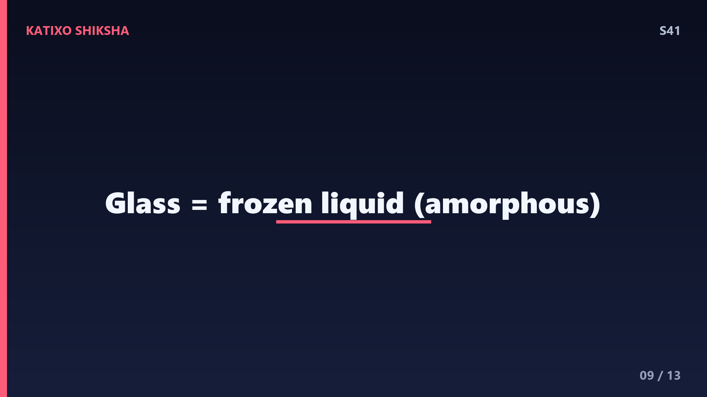
Slide 9अब एक उलझन सुलझाते हैं — कांच ठोस होते हुए भी इतना smooth और clear क्यों है, जबकि नमक और चीनी जैसे ठोस crystal नहीं दिखाई देने वाले clear होते? असल में कांच एक खास तरह का solid है जिसे amorphous solid कहते हैं। इसके atoms किसी सीधे-साधे order में जमे नहीं होते, बल्कि बिखरे हुए random तरीके से जमते हैं — बिल्कुल जमे हुए liquid की तरह। इसी uniform structure की वजह से light बिना बिखरे सीधे पार निकल जाती है, और हमें एकदम साफ़ view मिलता है।
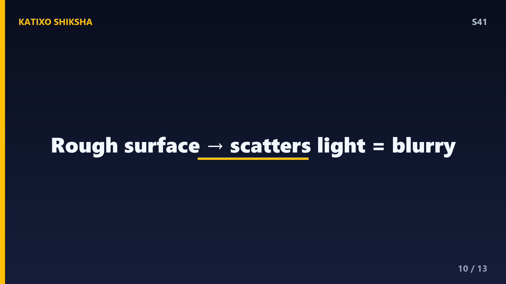
Slide 10तो फिर कुछ कांच धुंधले यानी frosted या foggy क्यों होते हैं? क्योंकि अगर कांच की surface खुरदरी हो या उसमें छोटे-छोटे particles मिले हों, तो light हर direction में बिखर जाती है — इसे scattering कहते हैं। Light पार तो जाती है, लेकिन सीधी नहीं जाती, इधर-उधर फैल जाती है, इसलिए साफ़ image नहीं बनती। यही reason है कि बाथरूम का frosted glass रोशनी आने देता है पर आर-पार साफ़ नहीं दिखने देता। Transparent और translucent का यही फ़र्क़ है।
Slide 11Quick brain check, दोस्तों! तीन सवाल — ज़रा दिमाग़ दौड़ाओ। पहला — कांच visible light को क्यों पार जाने देता है, इसका असली कारण क्या है? दूसरा — रात में कांच आईने जैसा क्यों दिखने लगता है? और तीसरा — frosted glass से आर-पार साफ़ क्यों नहीं दिखता? Video को यहीं pause करो, थोड़ा सोचो, और अपने जवाब मन में या comment में लिख डालो। तैयार? चलो अब जवाब मिलाते हैं!
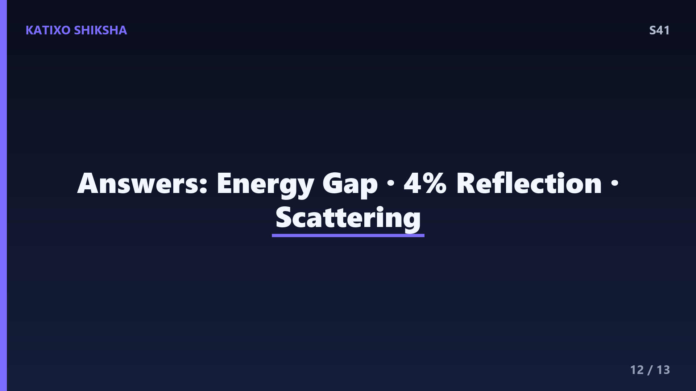
Slide 12अब जवाब! पहला — कांच के electrons की energy levels के बीच इतना बड़ा gap है कि visible light उन्हें कूदा नहीं पाती, इसलिए light absorb नहीं होती और सीधी पार निकल जाती है। दूसरा — रात में बाहर अंधेरा और अंदर रोशनी होने से कांच पर होने वाला हल्का 4 percent reflection दिखने लगता है, इसलिए वह आईने जैसा लगता है। तीसरा — frosted glass की खुरदरी surface light को हर direction में scatter कर देती है, इसलिए साफ़ image नहीं बनती। सबके सही हुए? Superb!
Slide 13तो दोस्तों, आज हमने सीखा — transparency का राज़ है light की energy और material के electrons की energy levels का match. कांच में बड़ा energy gap होता है इसलिए visible light बिना absorb हुए पार निकल जाती है, और इसका amorphous structure उसे एकदम साफ़ रखता है। Reflection, refraction और scattering — ये सब इसी खेल के हिस्से हैं। अगले episode में हम जानेंगे — camera एक photo कैसे capture करता है, light को कैसे पकड़कर हमेशा के लिए कैद कर लेता है! मज़ा आया तो Subscribe करना मत भूलना! Bye!